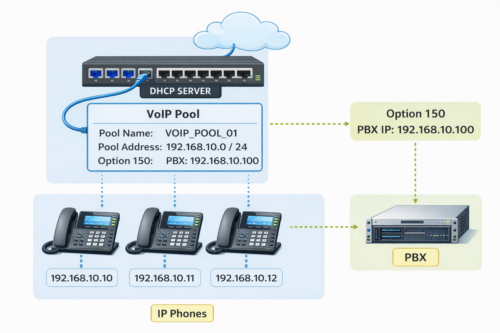

This is the process of setting up a router so that VoIP devices can connect and make calls.
These are the minimum settings a router must have to support VoIP:
A VoIP Pool is a range of IP addresses reserved for VoIP devices (like IP phones) in a network.
| Parameter | Example |
|---|---|
| Network Address | 192.168.10.0 |
| Subnet Mask | 255.255.255.0 |
Creating a VoIP pool automates IP assignment and ensures all phones connect to the VoIP server correctly, simplifying network management in offices or call centers.

This is the process of assigning a telephone number (extension) to an IP phone in a VoIP system.
In VoIP networks, each phone must have a unique extension number so users can call each other inside the organization.
A phone directory is a list of users, extension numbers, and sometimes names stored in the VoIP system.
IP phones can access this directory to find and call other users easily.
| Name | Extension |
|---|---|
| Reception | 100 |
| Manager | 101 |
| Finance | 102 |
| IT Office | 103 |
Some systems allow the directory to be stored on the PBX server or downloaded automatically to IP phones.
ePhones (Ethernet Phones) are IP phones registered to a VoIP router or VoIP server.
In many systems (especially Cisco VoIP systems), an ePhone configuration identifies a specific IP phone device.
Each ePhone usually includes:
Call Manager Express (CME) is a Cisco router-based VoIP system. It manages IP phones, extensions, and internal calls without a separate server.
The configuration includes:
The telephony-service command activates VoIP services on the router.
ePhones are the actual IP phones connected to the router. You must configure the maximum number of phones the router can support.
Directory Numbers (DNs) are the extension numbers assigned to phones. You can define the maximum number of extensions in the system.
CME can automatically assign extension numbers to phones when they register.
After configuration, you need to verify everything works correctly.
show ephone
registeredshow
ephone-dnA VoIP Server-Based System is a centralized voice system that manages calls for an organization.
IP PBX: Internet Protocol Private Branch Exchange (VoIP system using IP network)
PABX / PBX: Traditional private branch exchange for analog or digital lines
The server handles:
People or devices using the VoIP system.
Voice is analog by nature, but VoIP converts it to digital signals.
VoIP uses standard network protocols and layered models:
| Layer | Function |
|---|---|
| Application | VoIP software / IP PBX services |
| Transport | UDP (User Datagram Protocol) |
| Network | Internet Protocol (IP) |
| Data Link / Physical | Ethernet / Switch / Cabling |
Key Protocols:
Purpose: Ensures voice is sent reliably and quickly with minimal delay.
Connections between two PBX servers (branches). Allows calls between offices without using PSTN (saves costs).
Example: PBX Office A ↔ PBX Office B
Central point for call management and operator assistance. Routes incoming calls to the correct extension.
Example: Reception answers incoming call → transfers to Sales / Support.
Internal numbers (DNs) for each user or phone.
Example: 100 = Reception, 101 = Manager, 102 = IT
Purpose: Enables internal communication without public lines.
Access to external phone networks (PSTN / GSM). Enables national and international calling.
System alerts to notify issues:
| Tone | Meaning |
|---|---|
| Dial tone | Phone ready to dial |
| Ring tone | Destination phone ringing |
| Busy tone | Line is busy |
Assigns internal extensions logically.
| Department | Extensions |
|---|---|
| Reception | 100–109 |
| Sales | 110–119 |
| IT | 120–129 |
Calls made within the same PBX system. These are internal calls between extensions without using external phone lines.
Example: Extension 101 → Extension 102
Purpose: Allows seamless internal communication between employees or departments, reducing the need for public lines and minimizing call costs.
Calls that go outside the local PBX or to another branch PBX. These calls are routed through exchange lines or inter-PBX circuits.
Example: Extension 101 → PSTN → Client Phone / Extension at another branch PBX
Purpose: Enables external communication with clients, suppliers, or other offices, while integrating multiple PBX systems.
Hardware relays that connect internal PBX extensions to external telephone lines. Can operate manually or automatically to switch calls between internal and external lines.
Purpose: Ensures calls can flow seamlessly from internal extensions to external networks, providing reliability and flexibility in call management.
An automated phone menu that guides callers using voice prompts or keypad input, helping route calls efficiently without human intervention.
Example Menu:
Purpose: Automates call distribution, reduces workload for receptionists, ensures calls reach the correct department, and improves customer service efficiency.
| Method | Description | Explanation / Example |
|---|---|---|
| Round Robin | Calls distributed one by one sequentially |
Calls are assigned to agents in order. Example: Call 1 → Agent A, Call 2 → Agent B, Call 3 → Agent C, Call 4 → Agent A (repeat). Purpose: Ensures equal distribution among all agents. |
| Regular | Calls go to a fixed first destination |
Calls are sent to a primary agent first, then
forwarded if busy. Example: All incoming sales calls → Sales Agent 1 → if busy → Sales Agent 2. Purpose: Ensures calls reach the main contact first. |
| Uniform | Calls go to the agent idle the longest |
Calls are routed to the agent who has been free
for the longest time. Example: Agent A idle 10 min, Agent B idle 5 min → next call goes to Agent A. Purpose: Balances workload fairly among agents. |
| Simultaneous | Rings multiple phones at the same time |
All designated agents’ phones ring
simultaneously. Example: Call → Agent A + Agent B + Agent C simultaneously → first to answer takes the call. Purpose: Reduces waiting time for callers. |
| Weighted | Calls distributed based on agent priority |
Calls are assigned based on predefined agent
priorities or skill levels. Example: Senior Agent → 70% of calls, Junior Agent → 30% of calls. Purpose: Ensures experienced agents handle more calls or critical tasks. |
Forwards calls to multiple devices until answered.
Example: Office Phone → Mobile → Home Phone → Voicemail
Purpose: Never miss important calls.
Integration with VoIP allows automatic display of customer information when a call arrives.
Example: Salesforce, HubSpot, Zoho CRM
Purpose:
Call Routing is the process of defining how incoming calls are directed inside a VoIP or PBX system.
It ensures that calls reach the right person, department, or device efficiently.
IVR is an automated phone menu that interacts with callers using voice prompts or keypad input.
Example:
Different methods define how incoming calls are distributed among agents or extensions:
Calls are distributed in order, one after another.
Example:
Purpose: Equal distribution among agents.
Calls are sent to a fixed destination first, then forwarded if busy.
Example:
Purpose: Ensure calls reach the main contact first.
Calls go to the agent who has been idle the longest.
Example:
Purpose: Balance workload fairly.
Rings multiple phones at the same time. First agent to answer takes the call.
Example:
Purpose: Reduce waiting time.
Calls are distributed based on priority or skill level.
Example:
Purpose: Ensure experienced agents handle most calls.
FollowMe is a feature that forwards calls to multiple numbers until answered.
Example Sequence:
CRM software tracks customer information and integrates with the VoIP system.
How it works:
VoIP system testing is the process of checking if the voice network works correctly and delivers clear voice communication. It measures network performance and verifies that calls work correctly.
Speed or bandwidth is the amount of data that can travel through the network per second. VoIP requires enough bandwidth to carry voice packets.
Example:
Latency is the time it takes for voice packets to travel from the caller to the receiver. In simple terms: Delay between speaking and hearing the voice.
Good VoIP latency should be:
| Quality | Latency |
|---|---|
| Excellent | < 150 ms |
| Acceptable | 150–300 ms |
| Poor | > 300 ms |
High latency causes echo and delay during conversation.
Jitter is the variation in packet arrival time. Voice packets should arrive at regular intervals. Irregular arrival causes distorted or broken voice.
Example:
Good VoIP jitter value:
| Quality | Jitter |
|---|---|
| Good | < 30 ms |
Packet loss occurs when some voice packets are lost during transmission.
Example:
This causes:
Good VoIP packet loss should be:
| Quality | Packet Loss |
|---|---|
| Good | < 1% |
QoS is a network technique that prioritizes voice traffic over other data. This ensures voice packets are sent faster than normal data traffic.
Example:
This testing is done when the VoIP system is managed by a router with Call Manager Express (CME).
Example test: Extension 101 → Extension 102
Check:
Commands that can be used in routers:
Purpose: Verify the router handles VoIP calls correctly.
In this setup, a VoIP server (IP PBX) manages calls.
Examples of VoIP servers:
Test calls between internal extensions.
Example: Extension 201 → Extension 202
Verify:
Test calls from the VoIP system to external phone networks.
Example: Office Extension → PSTN → Mobile Phone
Verify:
Check if calls are sent to the correct destination.
Example: Customer Call → IVR → Support Department
Verify:
Test the FollowMe feature.
Example:
Verify: